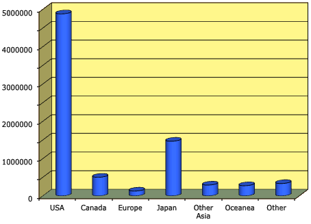
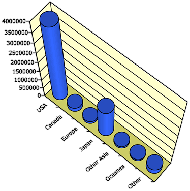

Chartjunk
|
If a categorical data set has only a few distinct categories, the information in
it can be very simply expressed. For example, consider the gender of each student
in a class of 160. The bar chart on the right only shows that there were 100 males,
62.5% of the class.
|
 |
Since the information contained in a bar chart is often simple (only 2 values
above), it is tempting to embellish bar charts 'artistically' to make them more
visually appealing. These additions are collectively called chartjunk.
Many spreadsheets, such as Microsoft Excel, make it easy to add chartjunk to bar
charts.
In general, chartjunk should be avoided — it is usually easier to read information
from a standard bar chart. Rather than adding chartjunk, draw the bar chart small
or replace it with a frequency table.
Three-dimensional chartjunk
A common form of chartjunk is obtained by changing each bar into a 3-dimensional
object. When the resulting 3-dimensional picture is rotated, it often becomes
harder to compare the heights of bars and to read off values from the axes. In
particular, perspective views should be avoided.
Hawaii visitor arrivals in 2012
The diagram below was produced by Microsoft Excel to show the origin of all
visitors to Hawaii in 2012.

Although this display is more visually appealing than the original barchart,
it is now harder to assess whether the visitor numbers from Japan were just over
or under 1.5 million.
Although the above barchart is still acceptable, the extra rotation and perspective
viewpoint of the diagram below make it an extremely poor representation of the
data.

Avoid drawing bar charts in 3-dimensions.